Contents
clear;
clc;
close all;
Set-up
load ('projIA.mat');
sound(speech, fs);
n = 100;
n2 = 5000;
Part A
figure(1);
impz(b,a,n);
title("Impulse Response All Pass Filter")
figure(2);
freqz(b, a, n);
title("Frequency Response All Pass Filter")
figure(3);
grpdelay(b, a, n);
title("Group Delay All Pass Filter")
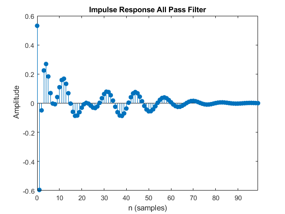 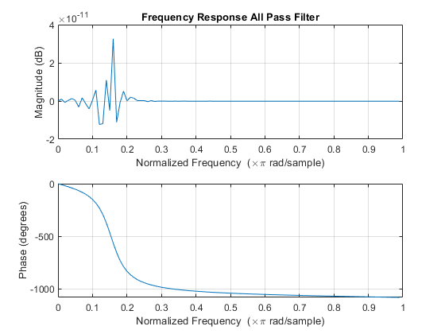 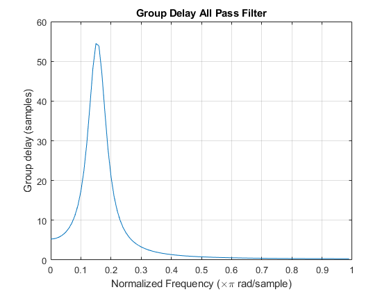
Part B
zplane(b,a);
title("Pole-Zero Diagram All Pass Filter")
pause(10);
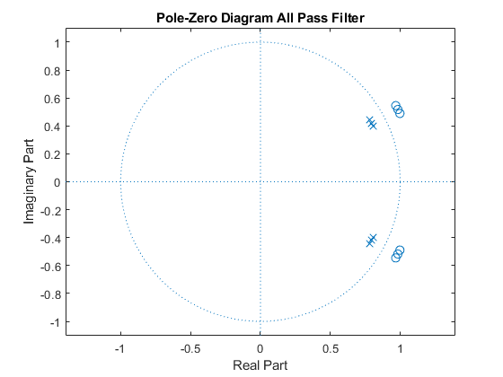
Part C
y = filter(b,a,speech);
sound(y, fs)
Part D & E
df = dfilt.df1(b,a);
z1 = repelem(df, 50);
directFormI = dfilt.cascade(z1);
impz(directFormI, n2);
title("Direct Form I Impulse Response")
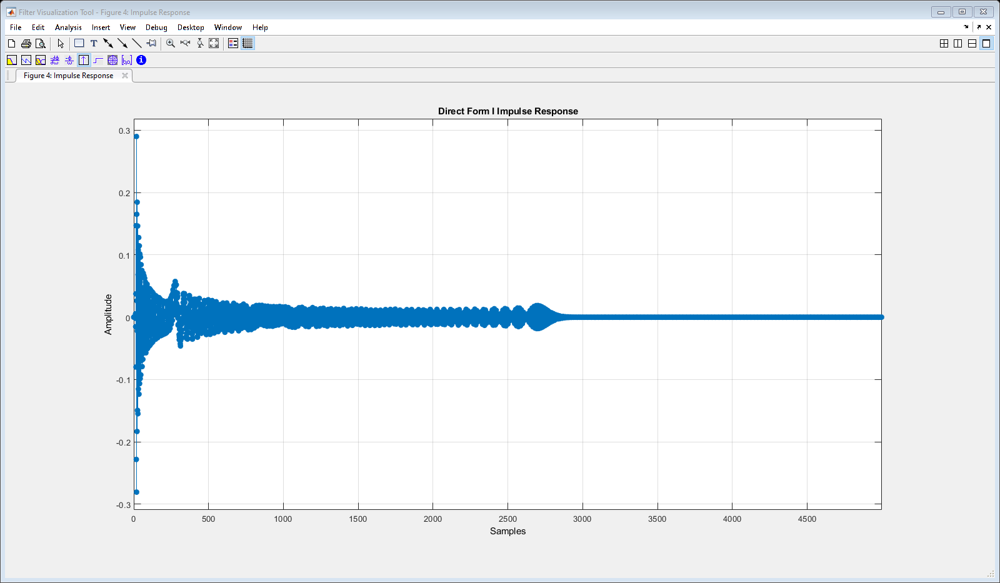
freqz(directFormI, n2);
title("Direct Form I Frequency Response")
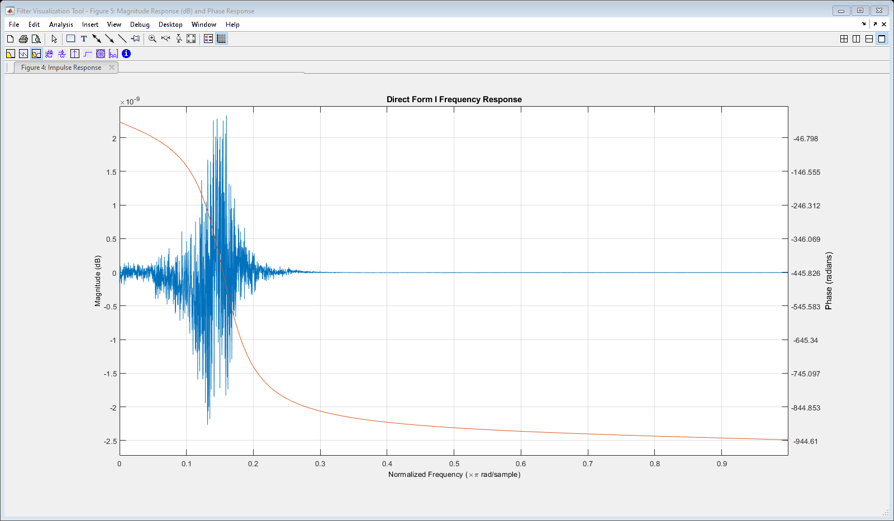
grpdelay(directFormI, n2);
title("Direct Form I Group Delay")
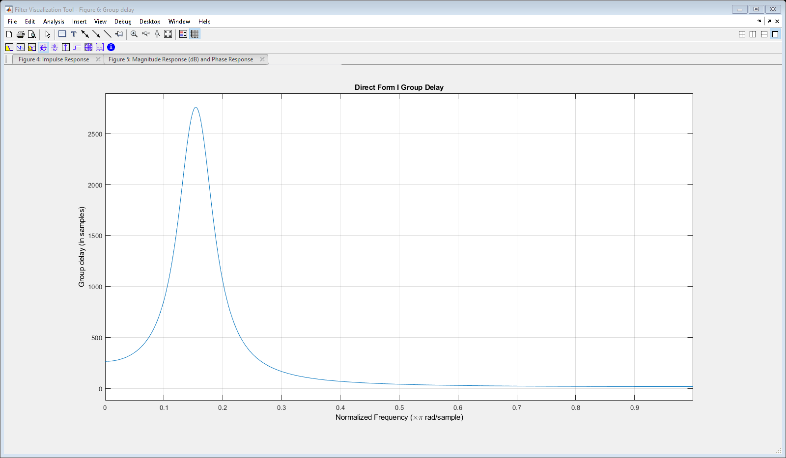
zplane(directFormI, n2);
title("Direct Form I Pole Zero Plot")
dfIfilt = filter(directFormI, speech);
soundsc(dfIfilt, fs);
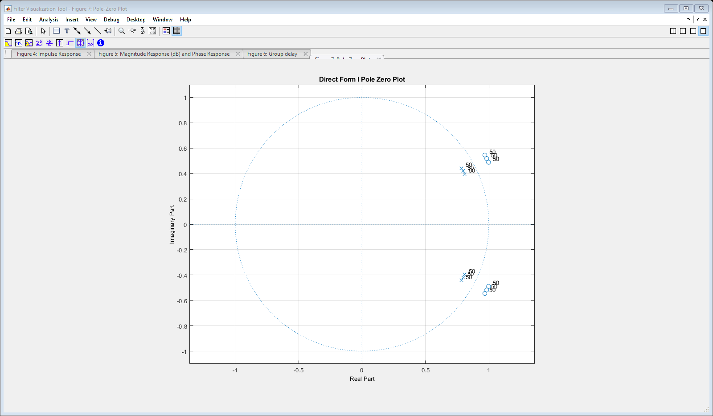
Direct Form I SOS
dfIsos = sos(df);
z2 = repelem(dfIsos, 50);
directFormISOS = dfilt.cascade(z2);
impz(directFormISOS, n2);
title("Direct Form I SOS Impulse Response")
freqz(directFormISOS, n2);
title("Direct Form I SOS Frequency Response")
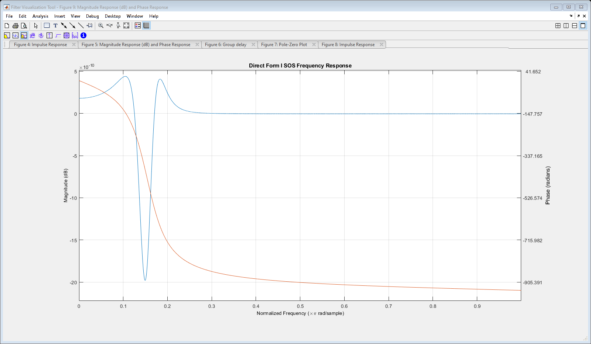
grpdelay(directFormISOS, n2);
title("Direct Form I SOS Group Delay")
zplane(directFormISOS, n2);
title("Direct Form I SOS Pole Zero Plot")
dfIsosfilt = filter(directFormISOS, speech);
soundsc(dfIsosfilt, fs);
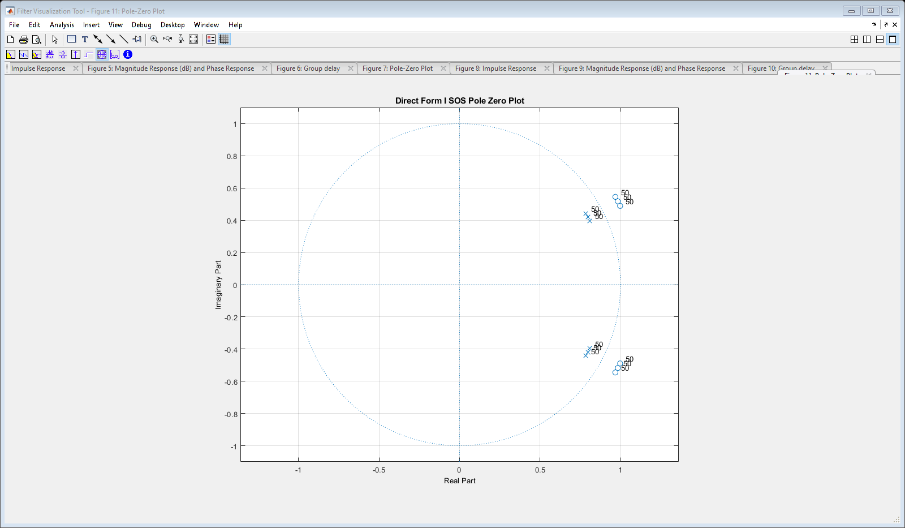
Direct Form II
df2 = dfilt.df2(b,a);
z3 = repelem(df2, 50);
directFormII = dfilt.cascade(z3);
impz(directFormII, n2);
title("Direct Form II Impulse Response")
freqz(directFormII, n2);
title("Direct Form II Frequency Response")
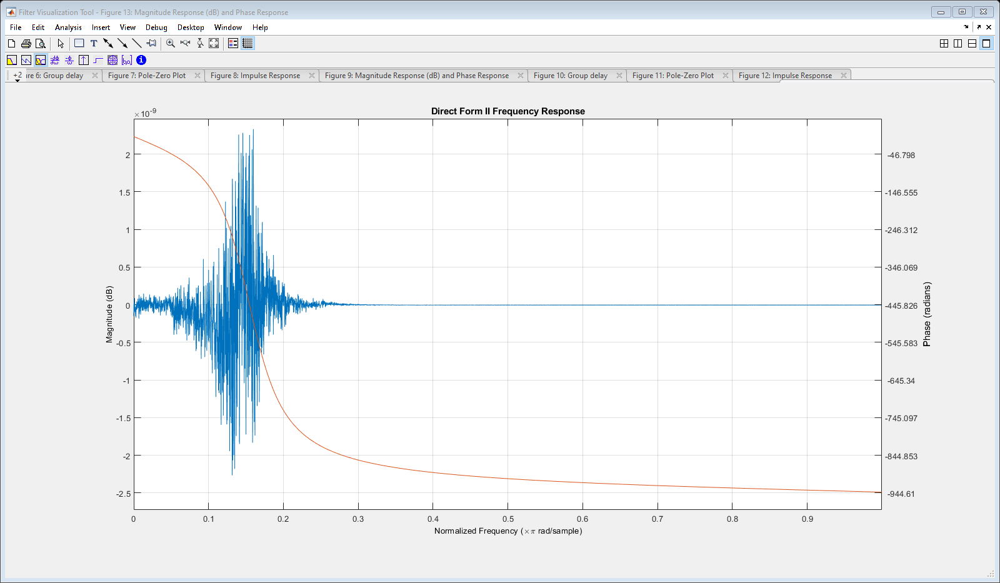
grpdelay(directFormII, n2);
title("Direct Form II Group Delay")
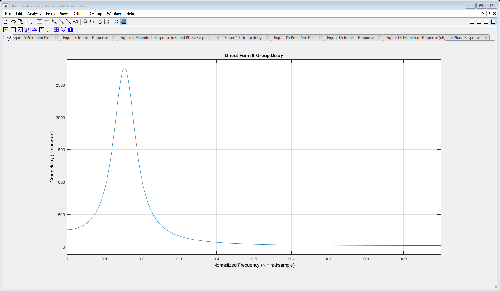
zplane(directFormI, n2);
title("Direct Form II Pole Zero Plot")
dfIIfilt = filter(directFormII, speech);
soundsc(dfIIfilt, fs);
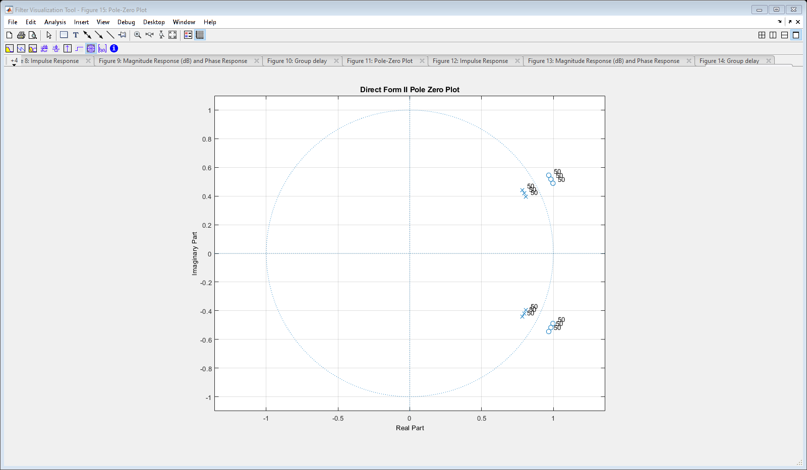
Direct Form II SOS
df2sos = sos(df2);
z4 = repelem(df2sos, 50);
directFormIISOS = dfilt.cascade(z4);
impz(directFormIISOS, n2);
title("Direct Form II SOS Impulse Response")
freqz(directFormIISOS, n2);
title("Direct Form II SOS Frequency Response")
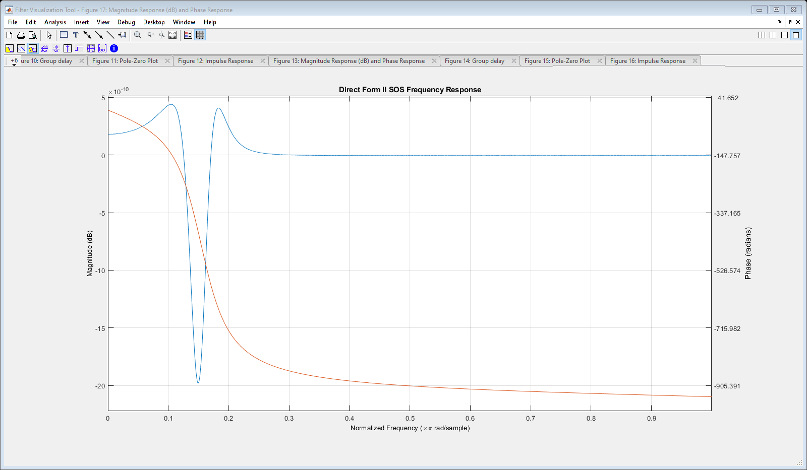
grpdelay(directFormIISOS, n2);
title("Direct Form II SOS Group Delay")
zplane(directFormIISOS, n2);
title("Direct Form II SOS Pole Zero Plot")
df2filtsos = filter(directFormIISOS, speech);
soundsc(df2filtsos, fs);
Direct Form II Transposed SOS
df2T = dfilt.df2t(b,a);
df2sosT = sos(df2T);
z5 = repelem(df2sosT, 50);
directFormIIsosT = dfilt.cascade(z5);
impz(directFormIIsosT, n2);
title("Direct Form II Transposed SOS Impulse Response")
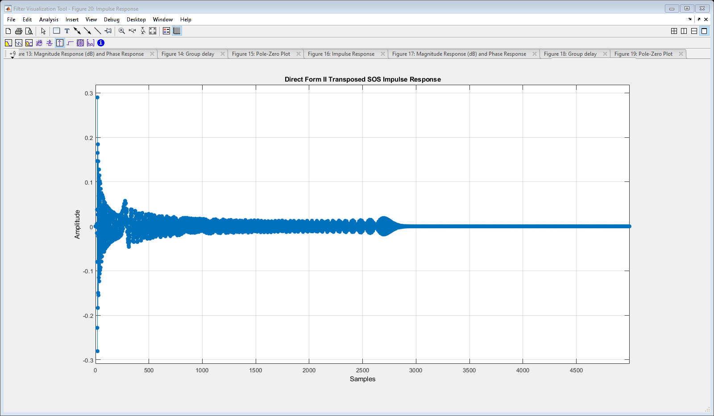
freqz(directFormIIsosT, n2);
title("Direct Form II Transposed SOS Frequency Response")
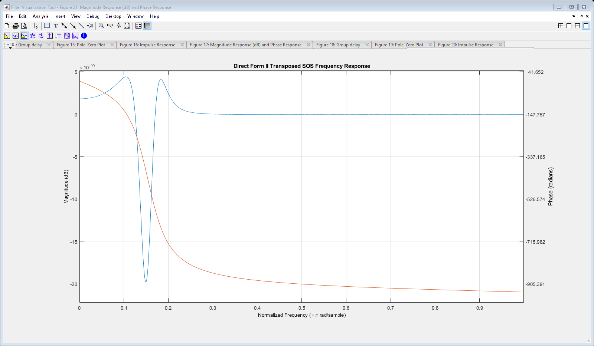
grpdelay(directFormIIsosT, n2);
title("Direct Form II Transposed SOS Group Delay")
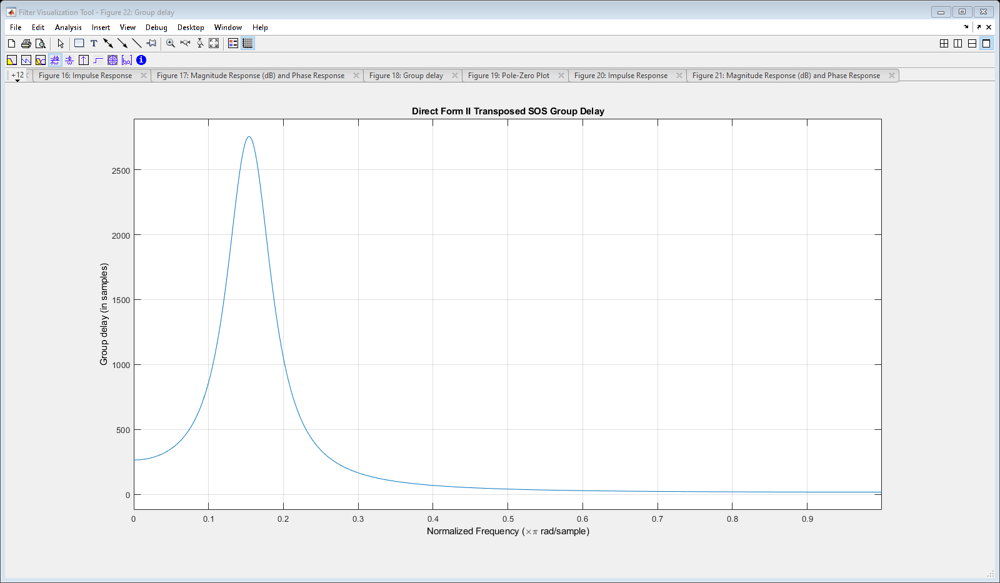
zplane(directFormIIsosT, n2);
title("Direct Form II Transposed SOS Pole Zero Plot")
df2filtsosT = filter(directFormIIsosT, speech);
soundsc(df2filtsosT, fs);
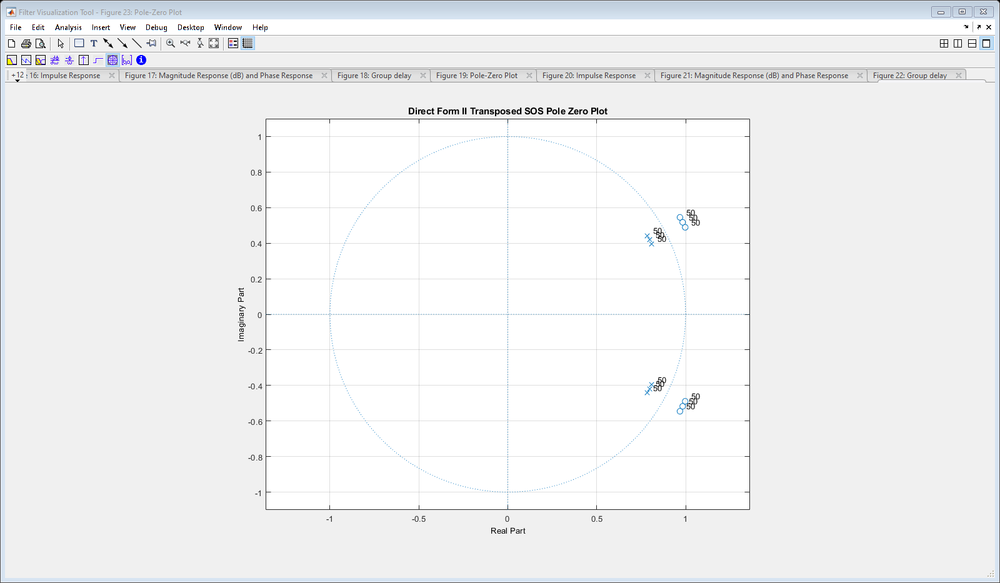
Explanation for the Sounds